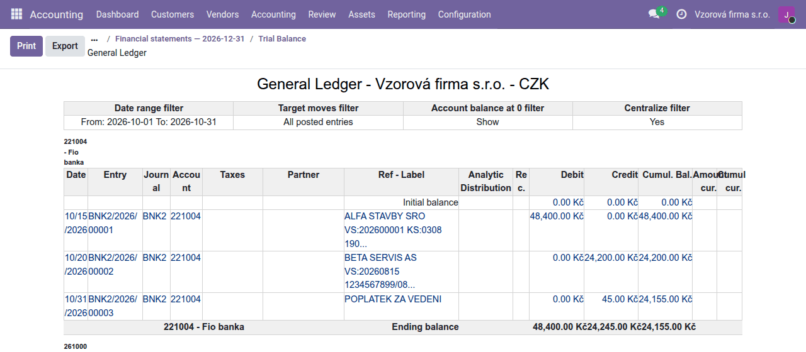
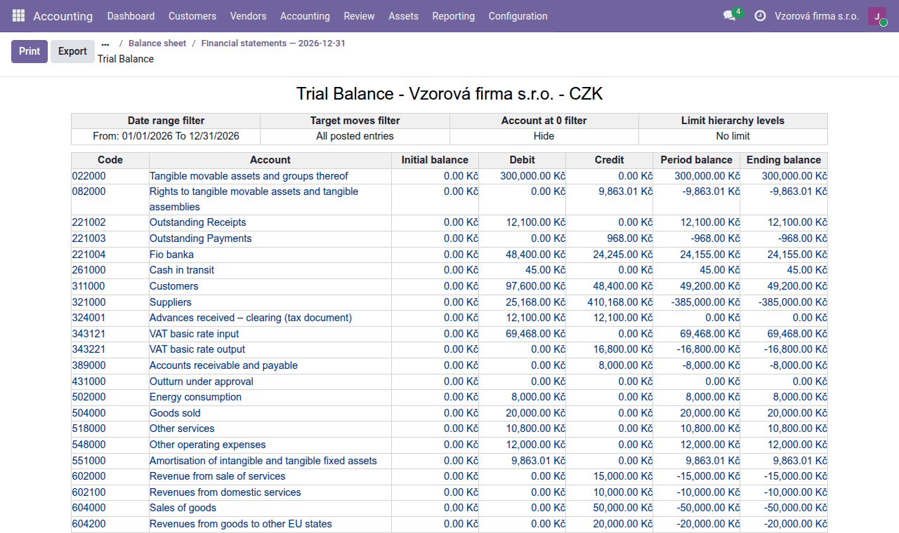
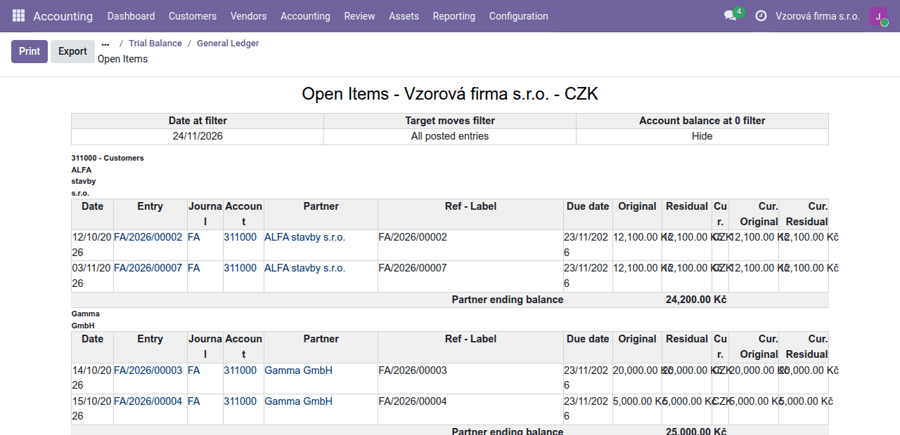

Task guide
Ledgers and reports
The deník, hlavní kniha, obratová předvaha and saldokonto in Odoo — which report is which, how to run, read and export them, and how to confirm balances with partners.
| Country | Czech Republic |
|---|---|
| Edition | Odoo Community |
| Covers | account, account_financial_report, l10n_cssk_account_financial_report, l10n_cssk_partner_balances, l10n_cssk_core |
What this guide is for
The books the Accounting Act asks for are reports in Odoo: nothing is kept twice, and each report is computed from the journal items whenever you open it. This guide says which report is which Czech book, how to run it and what to watch for. The words are explained in Odoo for a Czech accountant.
| You need | Report | Where |
|---|---|---|
| deník | Journal Ledger | Accounting → Reporting → OCA accounting reports |
| hlavní kniha | General Ledger | the same |
| obratová předvaha | Trial Balance | the same |
| saldokonto | Open Items, Aged Partner Balance | the same |
| a check of the VAT return | VAT Report | the same |
| any other view of the entries | Journal Items | Accounting → Review → Control |
| rozvaha, výkaz zisku a ztráty | Statutory Reports | Year end |
| management reports | MIS Reports | Management reports with MIS Builder |
Running a report
Every report under OCA accounting reports opens a window with the same controls:
| Control | Meaning |
|---|---|
| Date range, Date From, Date To | the period; Date At for the reports as of a day |
| Target Moves | All Posted Entries — the books — or All Entries, drafts included, to see what the books will look like |
| Exclude year-end closing and archive journals | leaves out the journals named as year-end closing journals, so that a closed year still shows its balances — see Closing journals |
| the filters below | accounts by code range, partners, journals, analytic accounts |
View shows the report on screen, Export PDF and Export XLSX give it as a file. On screen, Print and Export do the same, and clicking an entry or an account opens it. The headings and column titles of the reports themselves are in English for every user, whatever their language.
Deník — Journal Ledger
The chronological record of all entries. Choose the period and the Journals — all of them for the deník of the whole unit — and how to Sort entries by (Date or Entry number) and Group entries by (Journal gives one section per journal, No group one continuous list). Every entry is listed with its lines: account, partner, label, debit and credit.
Hlavní kniha — General Ledger
Every account with its opening balance, its movements in the period and the running balance:

- Limit it to some accounts on the tab Filter accounts (a code range, or Receivable Accounts Only / Payable Accounts Only), or to partners.
- Grouped By Partners splits the receivable and payable accounts by partner, each with its own balance — the saldokonto of one account.
- Hide account ending balance at 0 leaves out the accounts that end at nil.
Obratová předvaha — Trial Balance
One line per account: initial balance, debit and credit turnover, the balance of the period and the ending balance.

- Hide accounts at 0 leaves out accounts without a balance and without movement.
- Show hierarchy adds subtotals by account group — class, group and synthetic account.
- Show Partner Details breaks the receivable and payable accounts down by partner.
The trial balance is the starting point of every close: the turnover of 343 against the VAT return, of 551 against the depreciation plan, the balances to carry through 702 at the year end.
Saldokonto — Open Items and Aged Partner Balance
Open Items lists every unpaid document as of a day (Date At) per account and partner, with its due date, original amount and the rest still open. Aged Partner Balance sums the same per partner into columns by how long the items are overdue.
In both windows choose the accounts first — the report needs them: tick Receivable Accounts Only or Payable Accounts Only, or both, or give a code range.

The reports are computed back in time: with a Date At in the past, a document paid since is shown as still open on that day.
To agree the balances with the partners themselves — for the inventarizace
of receivables and payables at the year end — use Accounting → Customers →
Balance Confirmations: a stored confirmation per partner as of a day, to
print, send and mark as agreed or disputed. Mutual receivables and payables
are offset with Accounting → Vendors → Netting Agreements. Both are
described in
l10n_cssk_partner_balances.
VAT Report
The VAT posted in a period summed by tax grid (Based On Tax Tags) or by tax group, with the base and the tax. With Detail Taxes each tax is listed under its grid. Use it to find which tax a difference on a row of the VAT return comes from; the return itself is in Month-end VAT close.
Journal Items
Accounting → Review → Control → Journal Items is every line of every entry in one list. It answers what no fixed report does: filter by account, partner, journal, tax grid or date, group by any of them (account, then partner; tax grid, then month), and export the result. A filter worth saving is the unposted lines of the current period.
Closing journals
Once you post the closing and opening of the books through 710, 702 and 701
(Year end), every account is nil on 31 December
and the opening entry looks like a movement of the new year. Name the journal
that holds those entries in Accounting → Configuration → Settings, block
Czech / Slovak Localization, field Year-end closing journals: the
trial balance, the general ledger, the open items and the aged balance then
leave it out by default — the box Exclude year-end closing and archive
journals is ticked for you — and so do the statutory statements. Untick the
box to see the closing entries themselves
(l10n_cssk_account_financial_report).